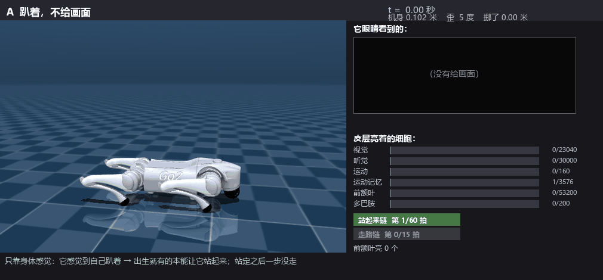
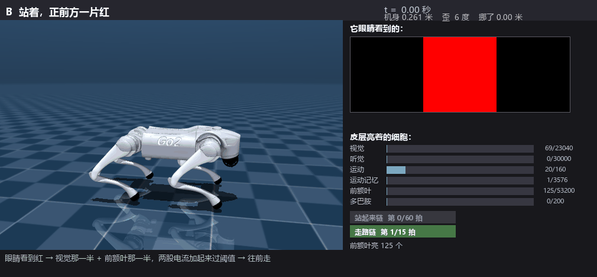
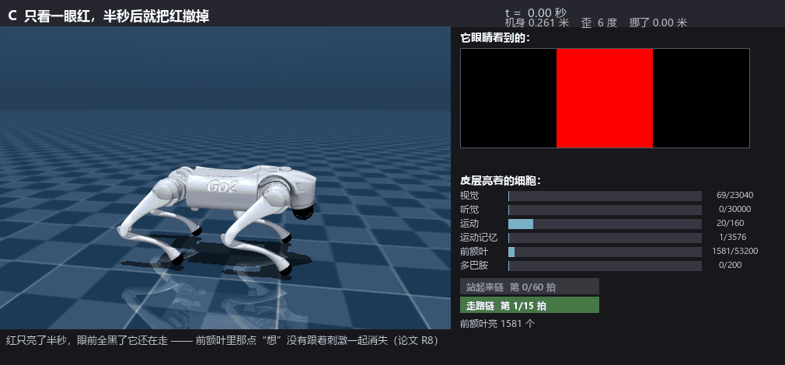
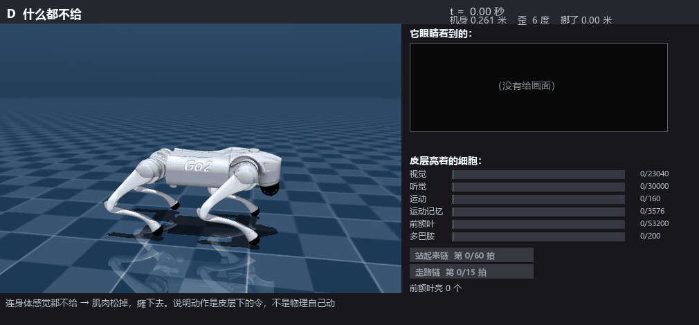

每一幕都从刚出生的同一颗脑子开始（同一个种子、同一套出生连线），只换外界信号。
代码里没有任何一行直接摆姿势：身体怎么动，完全看皮层发出什么。

只靠身体感觉觉出自己趴着 → 出生就有的本能把它撑起来；站定之后一步没走。末高 0.260 米。

眼睛看到红 → 视觉那一半 + 前额叶那一半，两股电流加起来过阈值 → 往前走。

红只亮了半秒，眼前全黑了它还在走 —— 前额叶里那点“想”没有跟着刺激一起消失（论文 R8）。5 秒走了 2.38 米。

连身体感觉都不给 → 肌肉松掉，瘫下去，末高 0.184 米、歪 41 度。说明动作是皮层下的令，不是物理自己动。